Panduan Pengguna Portal Eviden SK@S
Panduan ini menerangkan setiap menu portal, langkah demi langkah. Nombor oren pada gambar sepadan dengan nombor langkah.
Pilih peranan anda di atas untuk melihat bahagian yang berkaitan sahaja. Gambar boleh diklik untuk dibesarkan.
Log masuk dan peranan
Setiap pengguna membuka pautan portal yang dikongsi oleh admin sekolah.
| Peranan | Siapa | Boleh buat |
|---|---|---|
| Guru Data SKPM (Admin) | Akaun yang memasang portal | Semua: tetapan, Pasukan PPS, direktori, rumusan skor, Kekuatan dan Pencapaian Kami, semua eviden |
| Pasukan Pelaksana Sekolah (PPS) | Guru yang e-melnya didaftarkan di Pasukan PPS | Mengisi dan mengemas kini eviden bagi aspek yang dipertanggungjawabkan |
| Pemantau | Sesiapa sahaja (cth. pentadbir, nazir) | Melihat dan membuka eviden sahaja, tanpa mengubah apa-apa |
- Buka pautan portal. Jika e-mel anda sudah didaftarkan (Admin atau PPS), portal terus dibuka mengikut peranan anda.
- Jika belum didaftarkan, skrin pilih peranan dipaparkan. Pilih Pemantau untuk melihat sahaja. Kad Pasukan Pelaksana Sekolah dan Guru Data SKPM hanya berjaya untuk e-mel yang didaftarkan oleh admin.
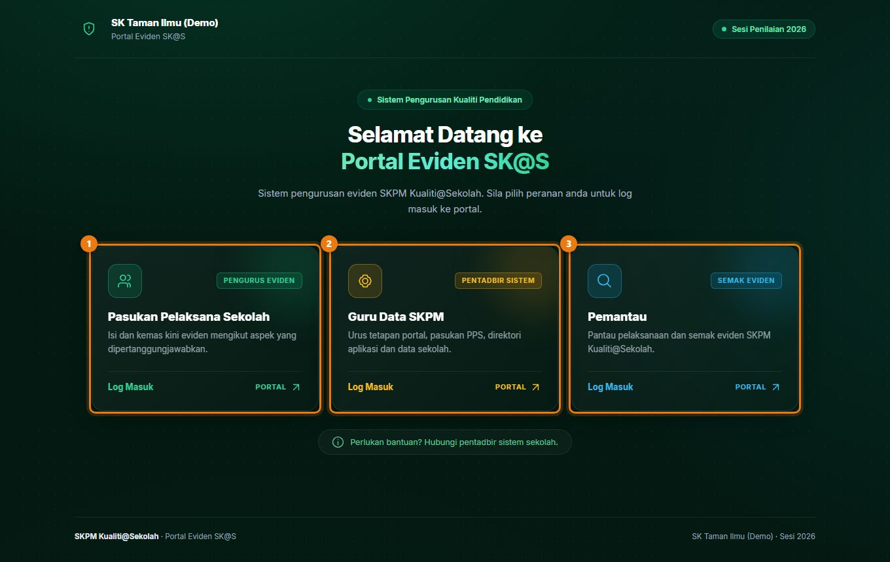
Mengenal skrin portal
- Menu tepi: semua halaman portal. Ruang Kerja Sekolah mengandungi tiga komponen SKPM; Pengurusan mengandungi fail, PPS, direktori, laporan dan tetapan.
- Butang ☰ mengecilkan menu tepi kepada ikon supaya ruang kerja lebih luas. Klik sekali lagi untuk membesarkannya. Pada telefon, butang ini membuka menu.
- Tahun: pilih tahun penilaian yang mahu dilihat atau diisi.
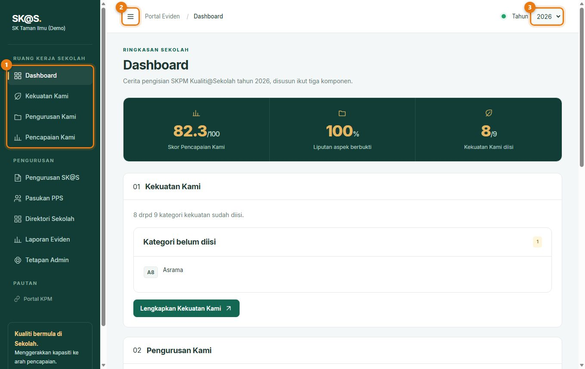
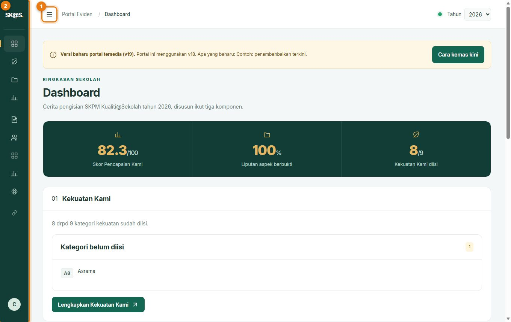
Dashboard
Ringkasan kesediaan sekolah bagi tahun yang dipilih, disusun ikut tiga komponen.
- Jalur ringkasan: skor Pencapaian Kami, liputan aspek yang ada bukti, dan bilangan kategori Kekuatan Kami yang sudah diisi.
- Setiap komponen menunjukkan apa yang masih kurang, berserta butang terus ke halaman berkaitan.
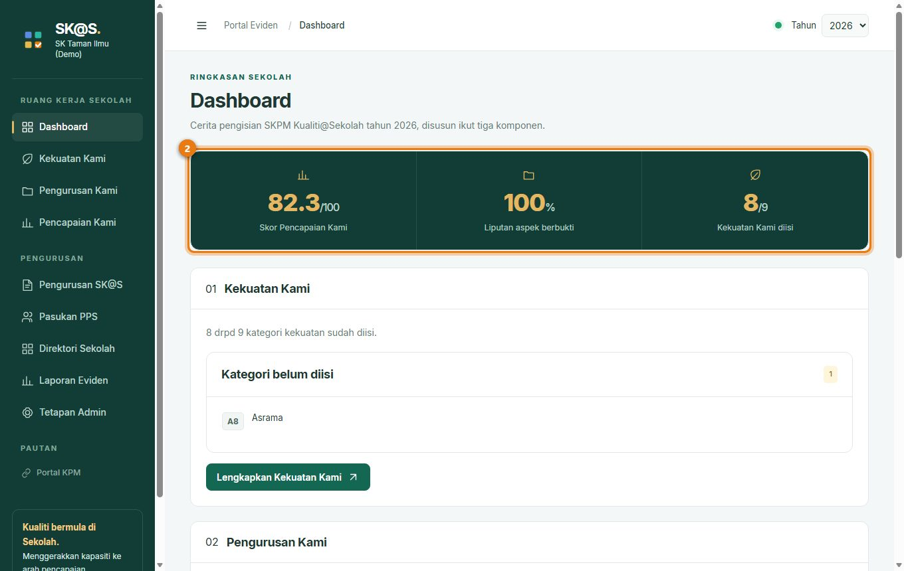
Membaca bahagian Pengurusan Kami
- Aspek belum ada eviden dan Aspek tanpa PPS ditetapkan: senarai yang perlu diselesaikan dahulu. Di bawahnya, carta bilangan eviden ikut standard dan taburan PDCA.
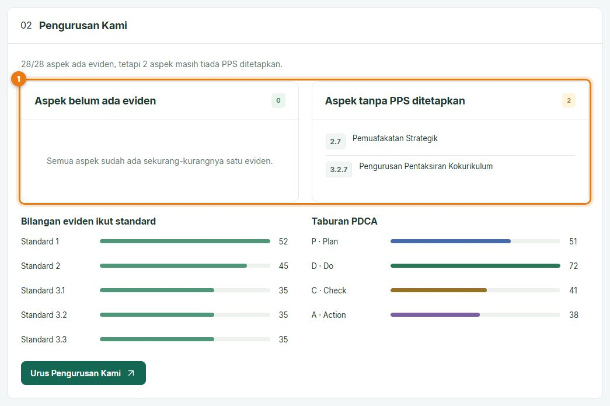
Kekuatan Kami
Profil sumber dan kekuatan sekolah dalam 9 kategori (A1–A9), contohnya Guru, Prasarana Akademik dan Persekitaran Digital.
- Setiap kad ialah satu kategori: ringkasan, nilai dan unit.
- Klik butang pada kad (Isi maklumat atau ikon pensel untuk mengubah) untuk mengisi kategori itu.
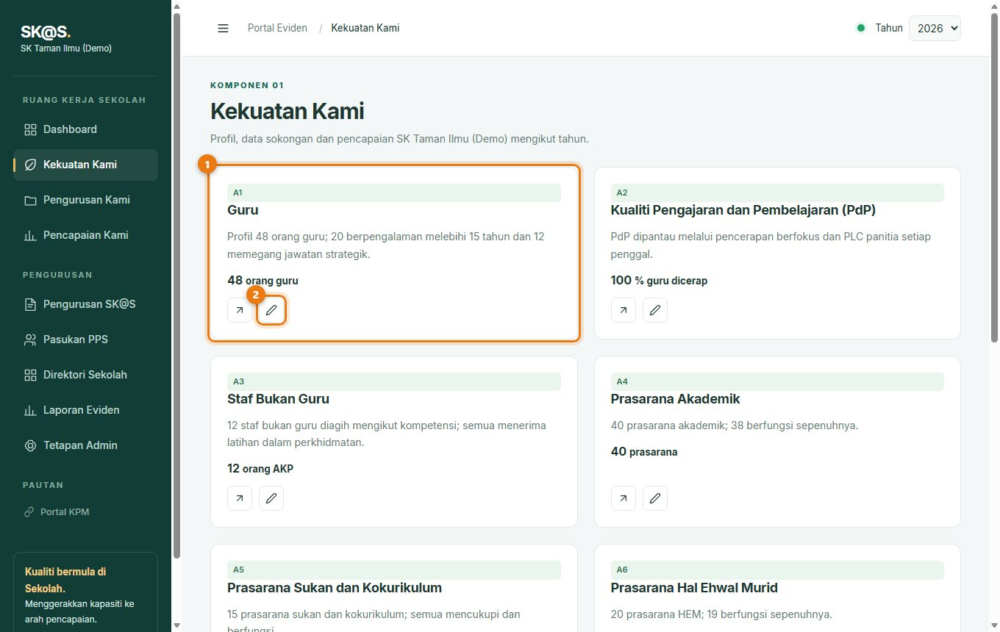
Mengisi satu kategori
- Huraian / ringkasan: ayat ringkas berdasarkan rekod sekolah, contohnya "Profil 48 orang guru; 20 berpengalaman melebihi 15 tahun".
- Nilai dan Unit: angka utama, contohnya 48 orang guru.
- Pautan dokumen atau dashboard sokongan, kemudian Simpan.
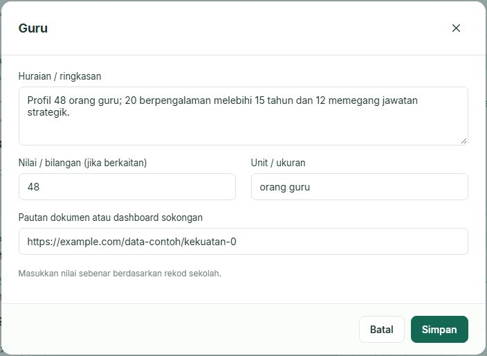
Pengurusan Kami: eviden mengikut aspek
Tempat utama mengumpul eviden. Setiap eviden dipetakan ke aspek dan tindakan PDCA SKPM.
- Standard: pilih standard (1, 2, 3.1, 3.2, 3.3). Peratus di sebelah ialah skor Rumusan Skor jika sudah diisi.
- Aspek: klik baris aspek untuk membuka item, PPS dan eviden di dalamnya.
- Tambah eviden: daftar eviden baharu.
- Eksport: muat turun senarai eviden ke Excel (CSV).
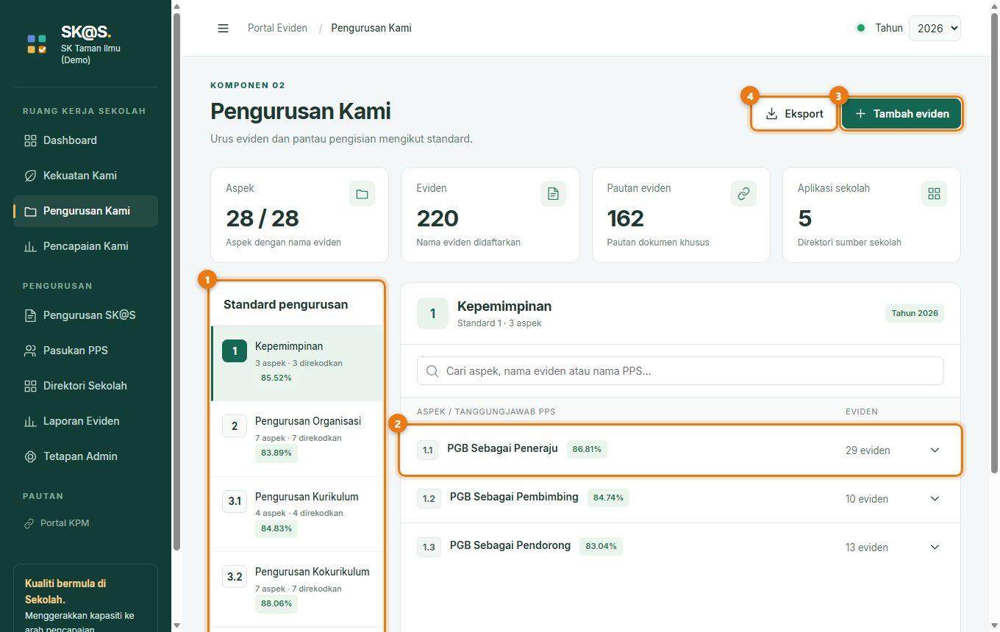
Di dalam satu aspek
- Tambah eviden pada item ini: aspek dan item terus dipilih dalam borang.
- Setiap baris ialah satu eviden: nama, kategori, unit dan peringkat PDCA (P, D, C, A). Baris bergaris kuning belum ada pautan dokumen.
- ↗ Buka eviden: membuka dokumen atau rekod.
- ✎ Ubah eviden: membetulkan maklumat atau menambah pautan.
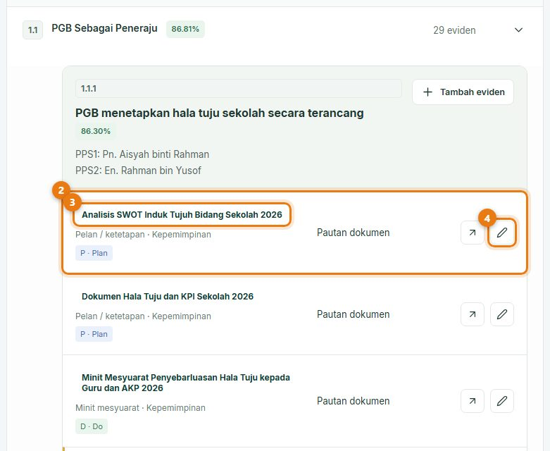
Menambah eviden
- Nama dokumen sebenar, contohnya Minit Mesyuarat Kurikulum Bil. 1/2026. Isi juga Kategori dan Unit / Jawatankuasa.
- Sumber eviden: Pautan dokumen (Google Drive dan lain-lain), Aplikasi sekolah (dari Direktori Sekolah), Muat naik fail (PDF/gambar, disimpan dalam Drive sekolah) atau Fail keras.
- Pautan dokumen: tampal pautan yang boleh dibuka oleh penyemak.
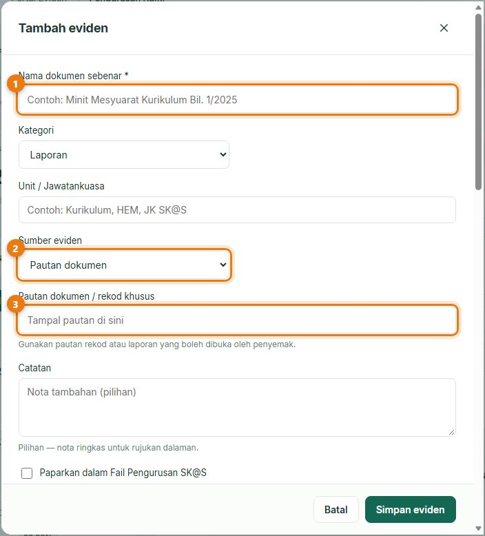
Tatal ke bawah dalam borang untuk memetakan eviden:
- Pilih aspek.
- Tandakan tindakan yang dibuktikan oleh dokumen ini. Peringkat PDCA dicadangkan secara automatik.
- Simpan eviden.
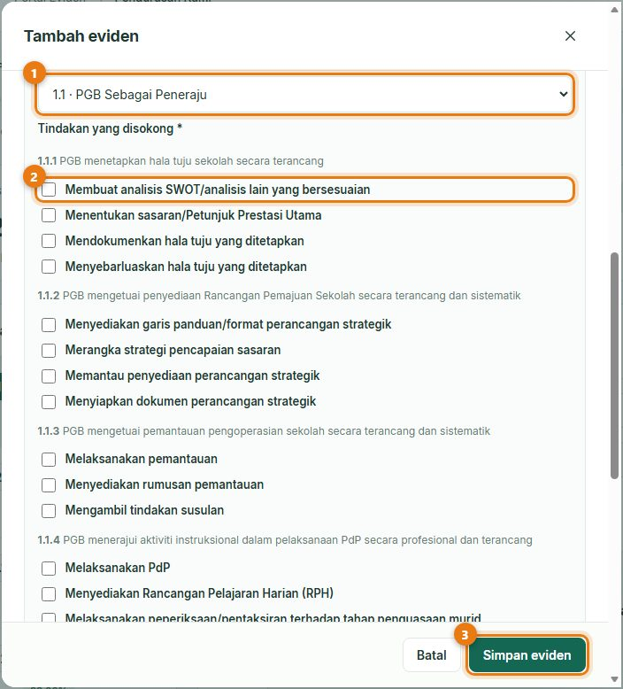
Pencapaian Kami
Skor Kemenjadian Murid (80 markah) dan Pencapaian Guru dan Sekolah (20 markah). Jumlah dikira secara automatik daripada 100.
- Ringkasan skor: jumlah keseluruhan dan dua bahagian utama.
- Pada setiap kad (K1–K5), klik ikon pensel Kemas kini skor.
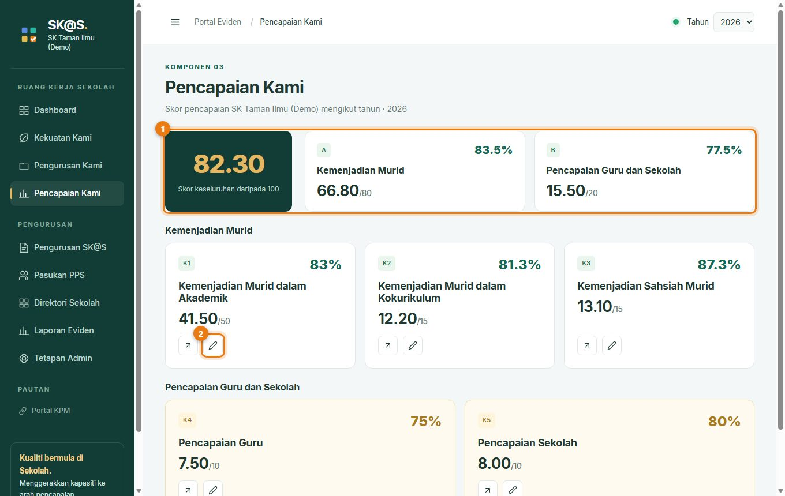
- Isi skor asal mengikut markah maksimum yang dinyatakan (cth. daripada 50), tambah pautan dokumen sokongan jika ada, kemudian Simpan skor.
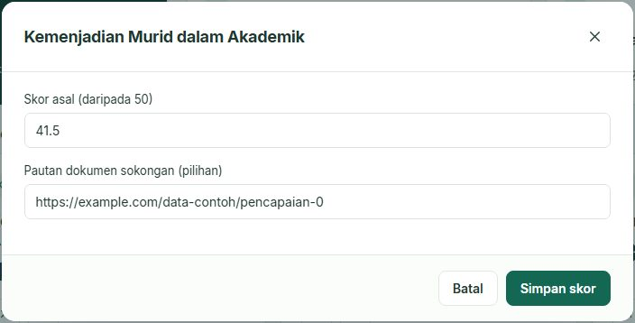
Pengurusan SK@S: fail pengurusan sekolah
Fail pengurusan SK@S sekolah (01 Surat hingga 11 Bahan Rujukan), berasingan daripada eviden Pengurusan Kami.
- Setiap baris ialah satu fail pengurusan, contohnya 01 Surat atau 06 Minit Mesyuarat JK SK@S.
- ↗ membuka dokumen atau folder fail itu.
- ✎ mengubah fail: tampal pautan folder atau dokumen sebenar sekolah di sini.
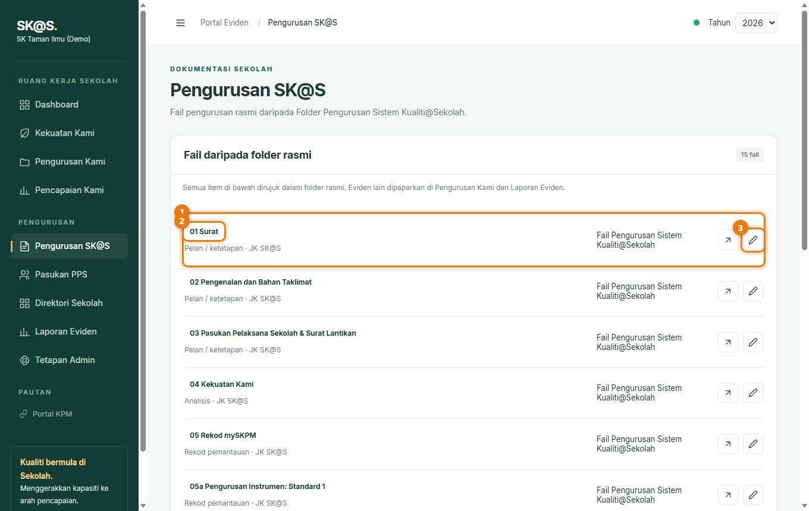
Pasukan PPS dan akses guru
Menetapkan Pasukan Pelaksana Sekolah bagi setiap aspek, dan memberi guru akses untuk mengisi eviden.
- Tambah PPS untuk mendaftar guru.
- Jadual menunjukkan PPS1 dan PPS2 bagi setiap item. Klik ikon pensel di sebelah nama untuk mengubah.
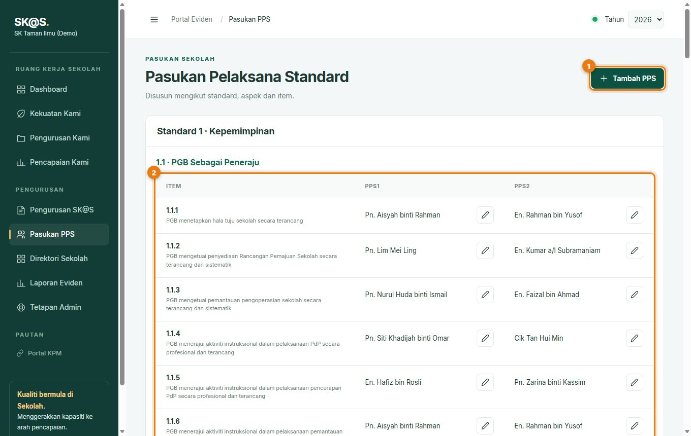
Mendaftar seorang PPS
- Nama guru.
- E-mel Google guru (cth. akaun DELIMa). Dengan e-mel ini, guru itu terus boleh log masuk sebagai PPS. Kosongkan jika guru itu tidak perlu mengisi sendiri.
- Jawatan, contohnya Setiausaha Kurikulum.
- Tandakan semua aspek tanggungjawab guru itu, kemudian Simpan PPS.
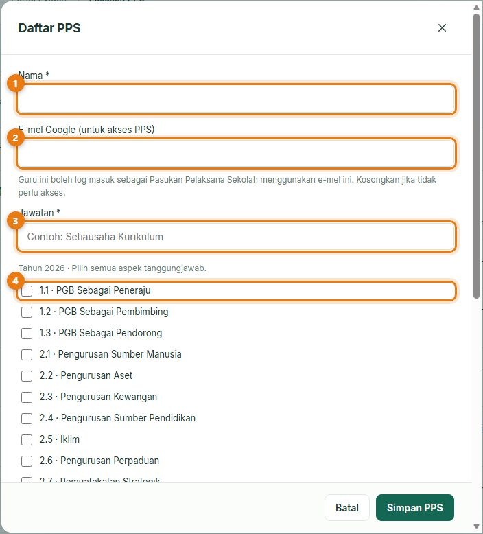
Direktori Sekolah
Senarai aplikasi dan sistem dalaman sekolah. Eviden boleh dipautkan terus kepada aplikasi di sini.
- Daftar aplikasi: nama, pautan dan fungsi aplikasi.
- Setiap kad: Buka aplikasi, atau ubah dan padam (admin sahaja).
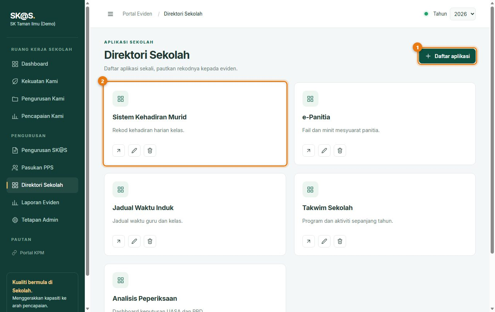
Laporan Eviden
Senarai lengkap eviden mengikut standard dan aspek, sesuai untuk mesyuarat dan verifikasi.
- Cari ikut nama standard, aspek, eviden atau sumber.
- Tapis ikut standard (dan aspek).
- Eksport CSV untuk dibuka dalam Excel atau Google Sheets.
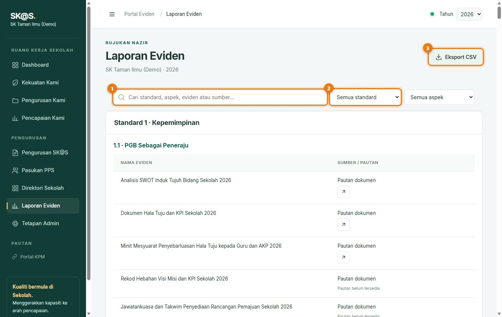
Tetapan Admin
Profil sekolah dan pautan
- Logo sekolah (PNG/JPG/WebP, maksimum 1 MB).
- Pautan menu sisi: satu pautan setiap baris, format Label | https://alamat, contohnya mySKPM | https://… (maksimum 10).
- Pautan sistem Standard 4 (PdP), jika sekolah ada sistem sendiri. Kosongkan untuk menyembunyikan Standard 4.
Nama dan kod sekolah diambil daripada lesen dan tidak boleh diubah di sini. Klik Simpan di bawah borang.
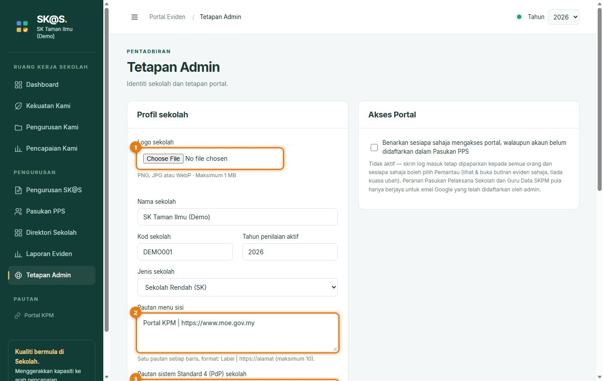
Akses Portal
Secara lalai, hanya e-mel yang didaftarkan (Admin dan PPS) boleh mengisi eviden; orang lain boleh masuk sebagai Pemantau. Tandakan kotak ini hanya jika mahu sesiapa sahaja boleh memilih peranan PPS tanpa didaftarkan.
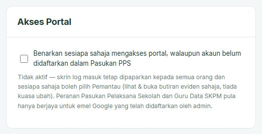
Rumusan Skor (dari MOEIS)
- Muat naik fail Rumusan-skor.xlsx yang dimuat turun dari MOEIS (CSV juga diterima). Skor terus dipaparkan pada setiap standard dan item di Pengurusan Kami.
- Atau klik Isi manual untuk mengisi atau membetulkan skor 42 item dan 5 peratus standard sendiri.
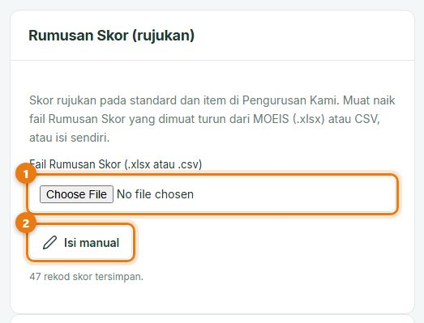
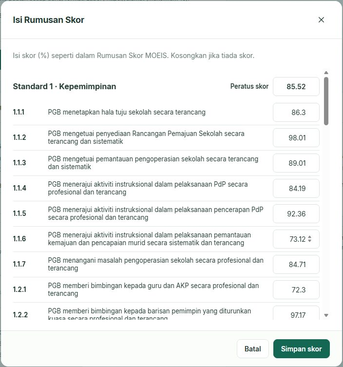
Data contoh
Jana data contoh mengisi portal dengan data rekaan supaya anda boleh mencuba semua menu. Klik Buang data contoh sebelum mula mengisi data sebenar. Rekod sebenar yang anda tambah tidak akan dipadam.
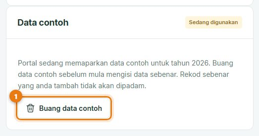
Mengemas kini portal
Bila versi baharu tersedia, jalur kuning dipaparkan kepada admin sahaja.
- Klik Cara kemas kini dan ikut langkah yang dipaparkan.
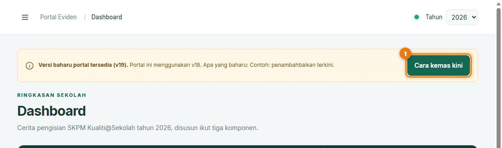
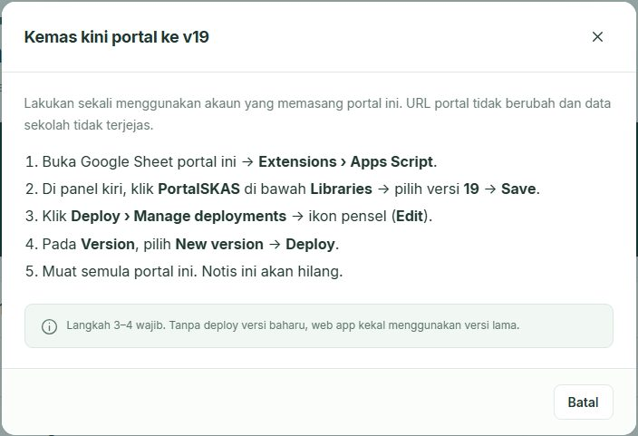
Paparan PPS
- Nama dan peranan anda dipaparkan di bawah menu tepi. Menu Tetapan Admin tidak dipaparkan untuk PPS.
- Tambah eviden di Pengurusan Kami. Lihat Pengurusan Kami untuk langkah penuh.
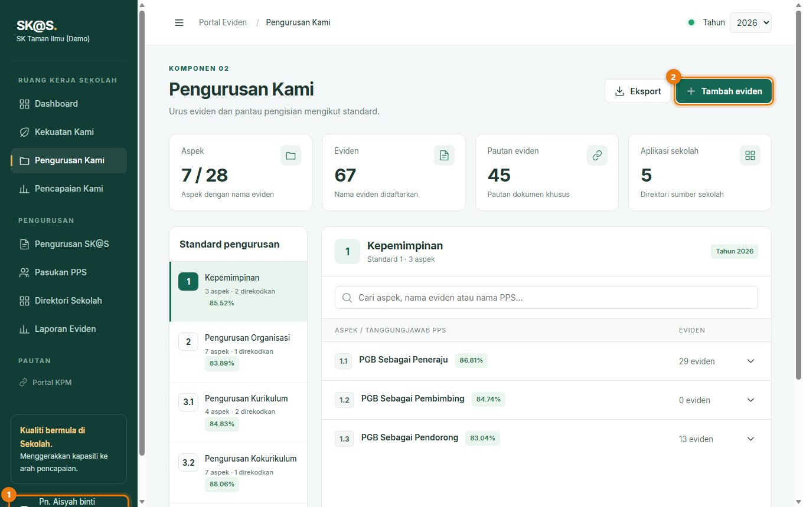
Masalah biasa
Portal tersangkut pada "Memuatkan portal SK@S…"
Muat semula halaman. Jika masih berlaku, buka dalam tetingkap Incognito dengan satu akaun Google. Admin: pastikan portal menggunakan versi terkini (lihat Mengemas kini portal).
"Akaun ini belum didaftarkan untuk peranan tersebut"
E-mel anda belum didaftarkan. Minta admin menambah e-mel anda di Pasukan PPS, atau pilih Pemantau untuk melihat sahaja.
Saya PPS tetapi tidak nampak butang Tambah eviden pada sesuatu aspek
Anda hanya boleh mengisi aspek yang dipertanggungjawabkan. Minta admin menandakan aspek itu dalam rekod PPS anda.
Penyemak tidak dapat membuka pautan eviden
Pastikan dokumen di Google Drive dikongsi sekurang-kurangnya kepada akaun dalam domain sekolah, atau "Anyone with the link".
Nama sekolah salah eja
Nama diambil daripada lesen. Hubungi pembekal dengan no. tempahan anda untuk membetulkannya.
Tiada bahagian untuk peranan ini.